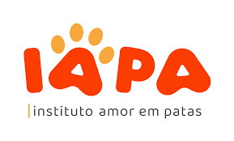

Instituto amor em patas
O IAPA é uma Organização Não Governamental sem fins lucrativos com sede administrativa em São Paulo/SP, fundada como Projeto em 2013 com o intuito de espalhar a conscientização acerca da importância em preservar a vida animal.
Ampara animal
Organização não-governamental sem fins lucrativos, 100% brasileira, fundada e dirigida por mulheres visionárias. Nasceu em 2010 e em 2013, receberam do Ministério da Justiça o título de OSCIP (organização da sociedade civil de interesse público), comprovando seriedade e transparência.